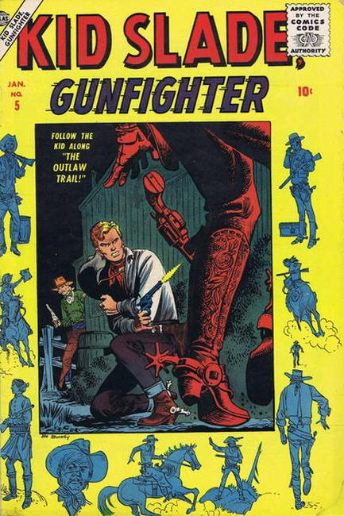

Kid Slade Gunfighter

Series: #5-8 1957 continued from Matt Slade, Gunfighter #4
Publisher: Atlas (Marvel)
Written by Stan Lee
Illustrations by Joe Maneely, Werner Roth, John Severin
First issue of the title (continued from Matt Slade, Gunfighter).
4 untitled Kid Slade stories (art by Joe Maneely, Werner Roth), plus a back-up story, "The Winner" (script by Stan Lee, art by John Severin). Two-page text story, "Man of Legend."